basekamp space > Events
Events
A selection of collaborative projects hosted at the Basekamp space| 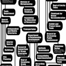 plausible artworlds organized by basekamp Strategic Planning Exhibition through 31 oct 2006 |
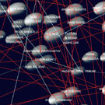east art map irwin / nsk june 2006 |
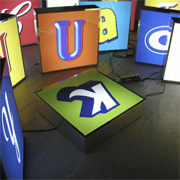participate? per hüttner & ciceron group december 2005 |
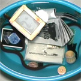together again damp & a constructed world january 2005 |
|||
| 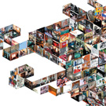translation / traduction incident group september 2004 |
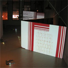strike gavin wade & liam gillick july 2004 |
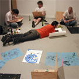grubstake natures radio group may 2004 |
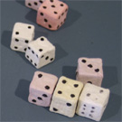prisoners' inventions temporary services april 2004 |
|||
| 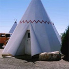wild west stefka ammon, björn hegardt, ethan jackson, & gudrun rauwolf december 2003 |
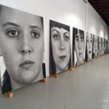ten cornford & cross march 2003 |
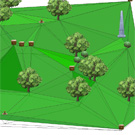american funeral home the institute for advanced architecture 2003 |
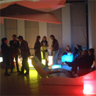james hyde collaboration between uarts and basekamp april 2002 |
|||
| 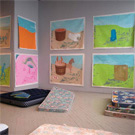(i feel like) something's gonna happen and i don't know what it is a constructed world may 2002 |
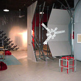let's get to work co-curated by gavin wade & jonathan van dyke november 2001 |
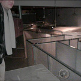buffered justin matherly, eric mcdade, & aaron igler february 2001 |
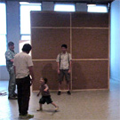1st public white cube blank & jeron with gerrit gohlke june 2002 |
|||
| 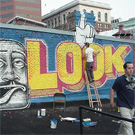wall power (roof mural) steve powers & barry mcgee may 2000 |
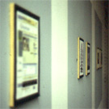curated basekamp & friends june 2000 |
 stunt double stunt doublebasekamp & friends june 1999 |
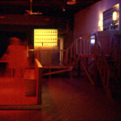hegemonic bar basekamp & friends march 1999 |